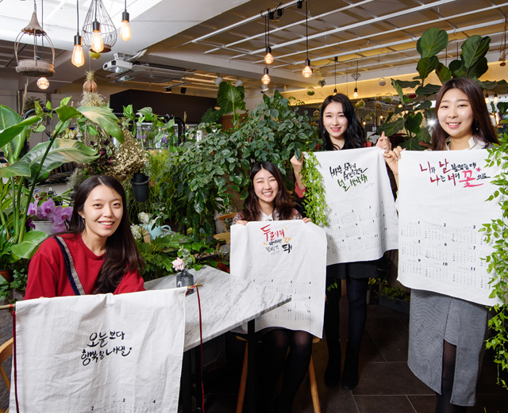
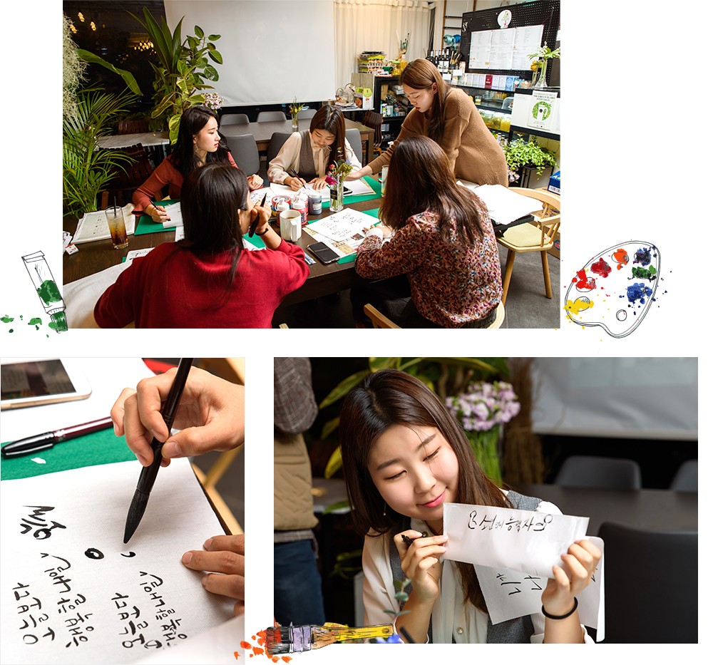
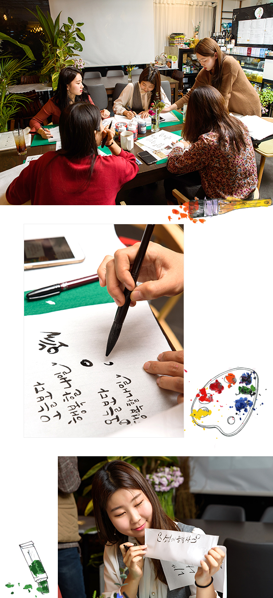
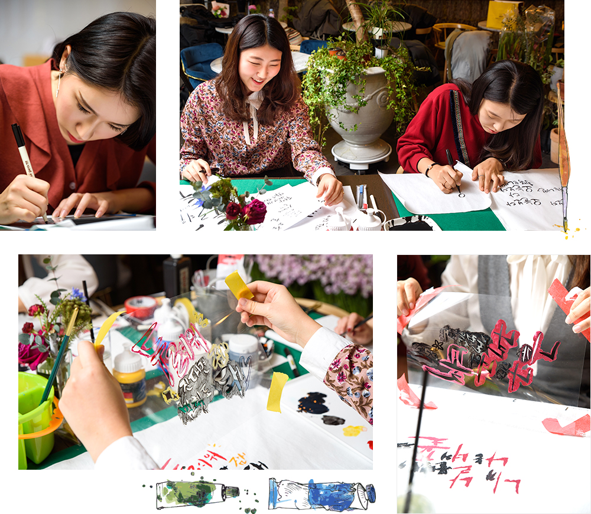
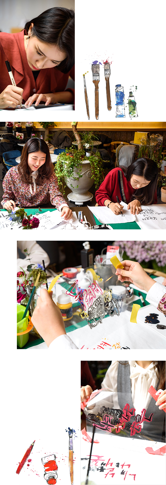
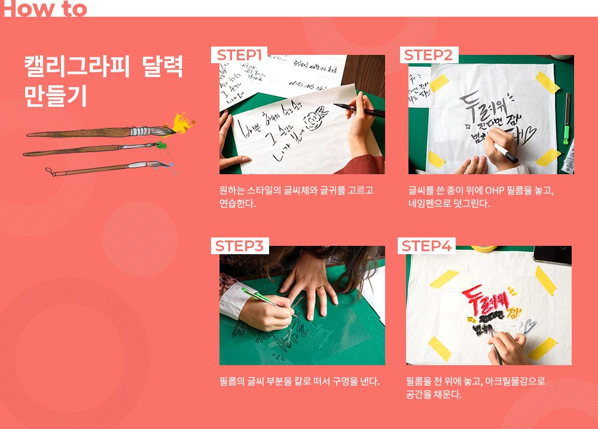
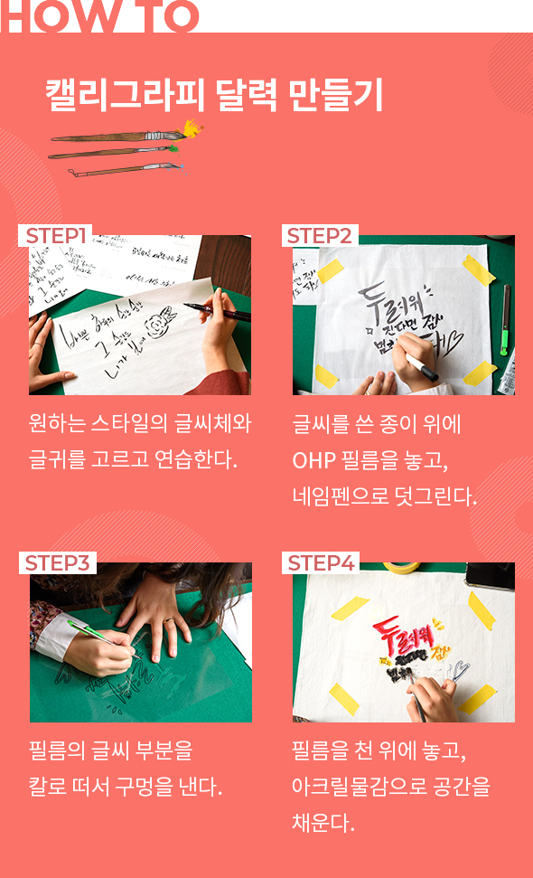

와 제 롤모델이 잡스에요!!! 아이폰 첫 출시되고 나서부터 계속 아이폰 쓰고 있는데 잡스가 너무 그리워요ㅠㅠ 지금은 돈만 벌려고 하는 것 같아서 디자인 발전도 없고ㅠㅠ와 제 롤모델이 잡스에요!!! 아이폰 첫 출시되고 나서부터 계속 아이폰 쓰고 있는데 잡스가 너무 그리워요ㅠㅠ 지금은 돈만 벌려고 하는 것 같아서 디자인 발전도 없고ㅠㅠ와 제 롤모델이 잡스에요!!! 아이폰 첫 출시되고 나서부터 계속 아이폰 쓰고 있는데 잡스가 너무 그리워요ㅠㅠ 지금은 돈만 벌려고 하는 것 같아서 디자인 발전도 없고ㅠㅠ와 제 롤모델이 잡스에요!!! 아이폰 첫 출시되고 나서부터 계속 아이폰 쓰고 있는데 잡스가 너무 그리워요ㅠㅠ 지금은 돈만 벌려고 하는 것 같아서 디자인 발전도 없고ㅠㅠ와 제 롤모델이 잡스에요!!! 아이폰 첫 출시되고 나서부터 계속 아이폰 쓰고 있는데 잡스가 너무 그리워요ㅠㅠ 지금은 돈만 벌려고 하는 것 같아서 디자인 발전도 없고ㅠㅠ
오! 해피데이
매일 내게 힘을 주는
캘리그라피
달력 만들기
달력 만들기
캘리그라피 달력
만들기
만들기

잘 만든 달력이 하루를 바꾸고 ‘작심 365일’을 만든다.
새해를 맞아 네 명의 도전자가 삶을 더욱 특별하게 해줄 캘리그라피 달력 제작에 도전했다.
손수 고른 글귀를 한 글자 한 글자 직접 디자인하는 만큼, 계획 실행과 점검에도 곱절의 애정을 실어줄 터!
글씨를 예술로 승화하는 과정이 쉽진 않지만, 그 미묘한 아름다움에 한 번 빠지면 헤어나기 어렵다.
글편집실
사진김선재(페니레인 스튜디오)
손글씨의 귀환 ‘붓 좀 잡아보셨습니까?’
묵향 가득한 공방 안. 더 멋진 2019년을 꿈꾸는 도전자들이 호기롭게 화선지를 펼쳤다. 캘리그라피의 장점 중 하나는 많은 준비가 필요 없다는 것이다. 붓, 먹, 벼루, 화선지가 기본 재료이지만, 따로 서예 용품을 갖고 있지 않다면 보급형 만년필이나 쉽게 구할 수 있는 붓펜으로도 얼마든지 가능하다. 강사의 말을 시작으로 클래스의 막이 올랐다. “좋은 글씨는 자신이 표현하고자 하는 바를 전달할 수 있는 글씨이지요. 글씨를 예쁘게 쓰는 것도 중요하지만 그 글에 숨어 있는 내용이나 감정이 글씨를 보는 사람에게 전달되도록 하는 데 각별한 신경을 써야 합니다. 만약 ‘설날’이라는 단어를 캘리그라피로 쓴다면, 그 글자를 봤을 때 명절의 풍성하고도 따뜻한 느낌이 느껴지도록 써 보세요.”
‘아름다운 서체’라는 뜻의 그리스어에서 유래한 캘리그라피(Calligraphy)는 컴퓨터 글꼴이 주는 반듯하지만 딱딱한 느낌에서 벗어나 다양한 개성과 온기를 전달한다. 획일화된 서체만 보다가 손으로 대강 휘갈긴 듯한 글씨를 보면, 마치 화선지에 먹물이 번져 나가듯 마음속에 묘한 느낌이 새겨지는 이유다. 특히 자음 하나, 모음 하나로도 그림을 그릴 수 있는 한글 캘리그라피는 글자의 크기와 획의 굵기 조절에 따라 감정 표현까지 가능하다. 서툴게 쓴 글씨에서도 고유의 개성이 묻어나고, 흔들린 글씨에서 미묘한 매력이 느껴지기도 해 굳이 달필이 아니어도 상관없다.


디지털 시대, 캘리그라피로 전하는 아날로그 ‘갬성’
글귀를 정하고 정성을 담아 써 내려가는 매 순간, 새롭게 펼쳐질 2019년의 새날들을 상상하며 모두 한껏 기대에 부푼 눈치다. 직선, 곡선 긋기 연습에 이어 붓을 지그시 누르던 힘을 일순간에 빼 올챙이 모양을 만드는 등 글씨의 강약을 조절하는 연습이 이어졌다. 평소 글씨 쓸 일이 거의 없던 터라, 붓을 컨트롤하는 일부터 고행길이다.
‘오늘보다 행복한 내일’이라는 글귀를 고른 사공수경 대리는 달력을 볼 때마다 행복한 기운을 얻기 위해 ‘웃는 형상’의 글씨체 구현에 나섰다. 자음 모음 하나하나를 동그랗게 표현하기 위해 고군분투하는 손이 부들부들 떨린다. 조민경 사원은 ‘꽃’의 쌍기역을 꽃잎처럼 그리는 데 많은 정성을 쏟았다. 자음 모음의 균형과 분위기를 생각하면서 글자의 크기와 삐침, 농도를 조절하는 것도 중요하다.
처음 시도하는 터라 실수도 더러 있었지만, 시간과 정성을 쏟아 달력을 완성한 도전자들은 “좀 삐뚤빼뚤하더라도 손맛이 느껴지니 좋다”며 “무엇보다도 모든 과정이 내 손끝에서 이뤄진 만큼, 완성의 희열이 크다”고 입을 모았다. 자기 앞의 생에 성실한 모든 존재에게 훈장처럼 새날을 선물해줄 ‘동기부여 달력’과 함께, 희망찬 하루하루를 만들어나가겠다는 약속에 왠지 믿음이 갔다.


Mini Interview
-
사공수경 대리컨테이너전략고객관리팀이사한 집에 손수 만든 소품을 걸어놓고 싶어 신청했어요. 사실 글씨만 쓰면 되는 줄 알고 다소 만만하게 시작했는데, 만만치 않은 작업이었어요. 달력을 볼 때마다 ‘끝날 때까지 끝난 게 아니다!’ 라는 교훈을 되새길 것 같습니다.(웃음) ‘오늘보다 행복한 내일’이라는 희망찬 주문이 담긴 달력을 보며 매일 파이팅하겠습니다.
-
노윤하 사원벌크정산팀원모어찬스의 노래 중 ‘바쁜 하루의 순간순간도 널 생각해’라는 로맨틱한 노랫말을 캘리그라피로 옮겼어요. 포인트 글자만 확 살린 전략이 잘 맞아떨어진 제 작품은 100점 만점에 200점을 주고 싶을 정도로 만족스럽습니다. 이 달력과 함께 펼쳐질 새해는 모쪼록 사랑하는 사람들과 더 많은 시간을 보내고 좋아하는 일을 많이 하는 한 해가 되길 바랍니다.
-
조민경 사원벌크정산팀한 땀 한 땀 집중을 요하는 작업 덕분에 마음이 한결 차분해진 것 같아요. 저는 방탄소년단 지민의 노래 중 ‘니가 날 불렀을 때 나는 너의 꽃으로’라는 가사를 옮겼는데요. 칼로 떠내기 가장 어려운 자음인 ‘ㄹ’이 5개나 있어 하마터면 노래가 싫어질 뻔했지만(웃음), 결과물이 만족스러워 나중에 다른 응용작품도 도전해보고 싶어요.
-
김소연 사원벌크정산팀저는 러블리즈의 노래 ‘Rewind’ 중 ‘너무 두려워진다면 잠시 멈춰도 돼’라는 가사를 써봤어요. 처음 연습했던 글씨와 비교하니 짧은 시간 안에 그야말로 일취월장한 것 같아 뿌듯해요. 마음과 달리 ‘두려워’가 너무 부각된 것 같아 당황했지만, 노랫말처럼 한 걸음씩 용기 있게 내딛는 2019년이 되길 바랍니다.


#Tag
- #아크릴화원데이클래스 #신슬미 #이지헌 #홍성범 #하지윤
-
최고예요
322
-
좋아요
322
-
슬퍼요
322
-
그저 그래요
322
-
화나요
322